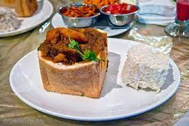

Home
DURBAN’S FAMOUS BUNNY CHOW

Bunny Chow has become one of Durban’s most famous exports!
A bunny-chow is basically made from half a loaf of bread (with the inside scooped out and kept to dip in the
gravy).
The hollow loaf is then filled with delicious authentic Indian curry – made from either Lamb Mutton
or Vegetables. Beef, chicken or mince can also be used.
Ingredients
- 1Kg Lamb Pieces
- Oil To Cover Base Of Pot
- Large Cinnamon Sticks
- 1 Tea spoon Fennel Seeds
- 1 Bay Leaf
- 6 Green Cardamoms
- 4 garlic Cloves
- A Sprig of Curry Leaves
- 1 Tea spoon Crushed Green Chillies
- 1 Large Onion, Finely Diced
- ½ Tsp Turmeric
- 2 Table spoon Crushed Ginger and Garlic Mix
- 1 Table spoon Vinegar (I Normally Use White Vinegar)
- 2 Tsp Sugar
- 3 Level Tea spoons Medium Chilli Powder
- 2 Tea spoon Coriander/Cumin Powder
- 1 Tsp Garam Masala
- 2 Tomatoes, Blended
- 5 Small to Medium Potatoes, Quartered
- Chopped Fresh Coriander
- Salt to Taste
Steps/Instructions
- Heat oil in pot.
- Add cinnamon, cardamom, cloves, bay leaf and fennel
- Stir
- Add curry leaves, chillies, onion, turmeric, ginger and garlic
- Braise for 3-4 minutes
- Add garam masala and spices to pot. Then vinegar and sugar. mix well
- Add the meat and salt
- Mix until the meat is coated with masala
- Cover saucepan and cook/braise on moderate heat for a few minutes.
- Stir from time to time until meat is well braised. Add potatoes.
- Add water as needed as the curry needs to be quite saucy.
- When potatoes are ¾ cooked add the chopped tomatoes.
- When potatoes are completely soft, stir and add coriander
- Serve with salad